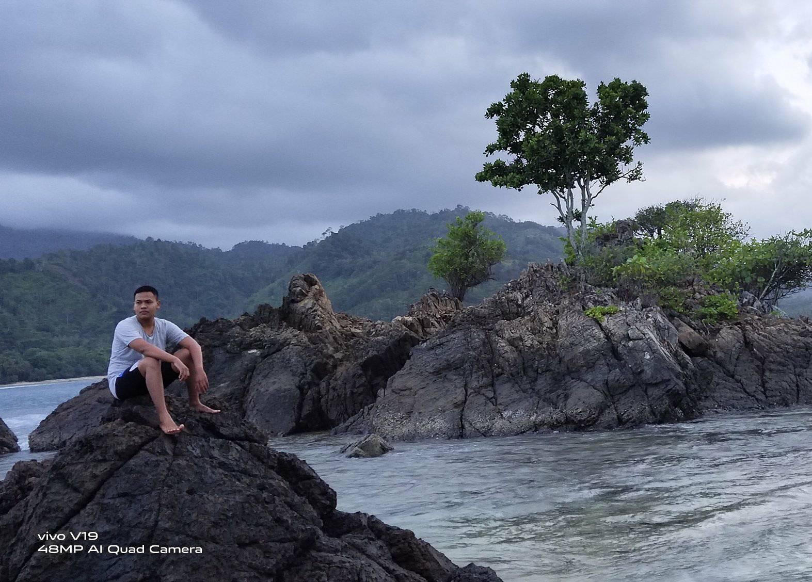

Teluk Kiluan, Surga Wisata Bahari Di Lampung
.
Teluk Kilauan merupakan surganya wisata bahari di Lampung tepatnya di Kabupaten Tenggamus, karena disini terdapat beberapa objek wisata yang sungguh mengagumkan
Kabupaten Tenggamus menyimpan potensi wisata alam yang menarik untuk dikunjungi, mulai dari wisata alam hingga wisata modern
Di Lampung sendiri ada Pantai Mutun, Pantai Sari Ringgung, Lembah Hijau Lampung, Puncak Mas Lampung, Pantai Gigi Hiu, Laguna Dodo atau Laguna Gayau dan masih banyak lagi.
Dan Teluk Kilauan sendiri diibaratkan rumah dari sebagian wisata alam tersebut, sehingga selalu ramai dikunjungi wisatawan yang datang dari berbagai daerah.
Dapat dijadikan sebagai lokasi untuk merefresh jiwa dan raga, setelah sekian lama kita harus di rumah saja akibat pandemi Covid yang melanda Indonesia hingga saat ini Meski begitu kamu ngga boleh lengah dan harus tetap mematuhi protokol kesehatan yang selalu digaungkan oleh Pemerintah.
.
Legenda Teluk Kiluan
.
Legenda Teluk Kiluan tak dapat dipisahkan dari keberadaan Pulau Kiluan yang berada di tengah Teluk Kiluan. Legenda yang melatarbelakangi Teluk Kilauan atau Pulau Kiluan atau Pulau Kelapa ini berkaitan dengan kesaktian Raden Mas Arya. Beliau merupakan seorang yang sakti dan dapat mengetahui kapan ajalnya akan tiba. Hal tersebut bermula dari tantangan seseorang yang mengajaknya untuk berduel untuk mengadu kesaktian yang dimiliki.Orang yang menantangnya merupakan seorang yang sakti pula. Raden Mas Arya memiliki firasat bahwa beliau akan kalah dan tewas dalam pertempuran tersebut, karena lawannya sudah mengetahui kelemahannya. Sebelum bertarung Raden Mas Arya berpesan jika beliau tewas agar dimakamkan di sebuah pulau yang saat ini dikenal dengan nama Pulau Kiluan atau Pulau Kelapa. Dan akhirnya firasatnya pun terbukti, beliau tewas dan dimakamkan di Pulau Kiluan sesuai dengan pesannya. Konon katanya makam beliau berupa gundukan batu yang ada di bukit Pulau Kiluan, dan dikeramatkan oleh warga sekitar.
dalam perjalan menuju pantai teluk kiluan memakan waktu sekitar 2 jam dari bandar lampung di perjalan yang cukup jauh di balas dengan pemandangan pergunungan yang tak kalah indah sesampainya di teluk kiluan lelah selama di perjalanan yang cukup jauh terbalaskan dengan pemandangan yang indah dan pantai yang bersih dengan suasana yang santai dan hijau di teluk kiluan kita bisa mengabadikan momen dengan berfoto dengan latar belakang yang sangat indah dan dalam soal biyaya cukup terjangkau.
.
.